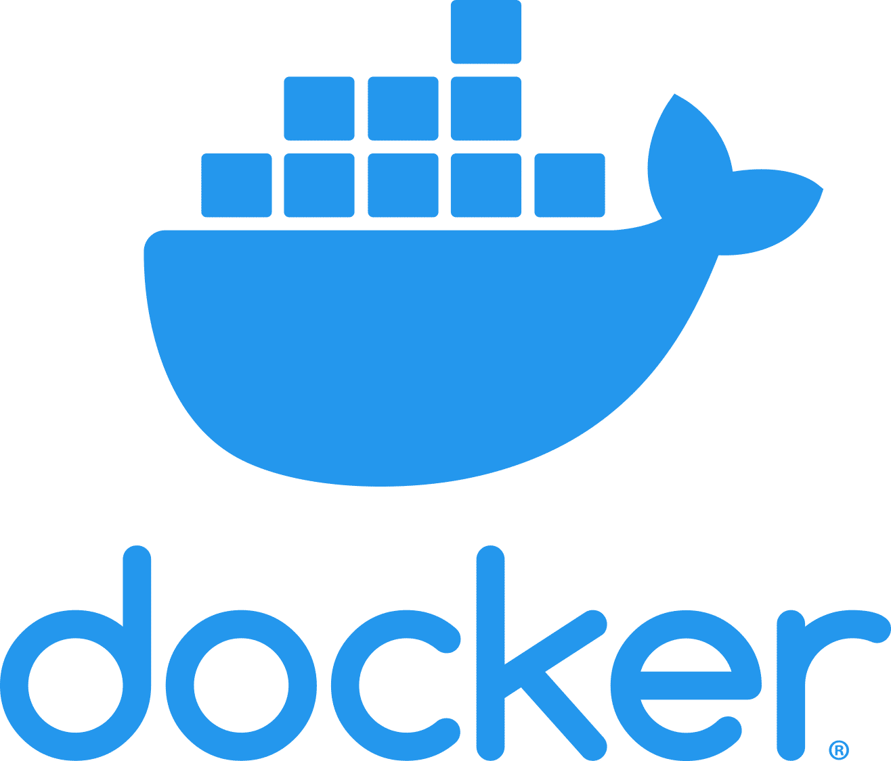

Technical background
Technologies
Several software container technologies exist. Each of these fills a somewhat different niche of the software ecosystem. This guide will refrain from going into the specifics of particular container technologies and instead discusses containers from a general and conceptual perspective. The reader is advised to supplement this reading with documentation or training material specific to the chosen technology.
Exploring Docker
For ForestNavigator, Docker is the container technology most likely to be fit-for-purpose. Docker is somewhat of a de-facto standard. You can learn more about Docker specifically, and set up some tooling for trying it out, by exploring the following:
The host limits the operating system of the container
What operating system can be used in a container depends on the operating system of the host machine on which the container is run. Linux containers can run on a Linux host, Windows containers can run on a Windows host, and so on. It is therefore important to determine that a host with a suitable operating system is available before deciding to containerize.
By using a virtual machine (VM) as an intermediate layer, it is possible to overcome this limitation. For example, a Windows machine can run a Linux VM which in turn can host Linux containers. Docker Desktop for Windows uses this trick. Therefore keep in mind that the host is a Linux VM when using Docker Desktop on a Windows machine as a containerization environment for Linux containers: otherwise you might be surprised that containers do not see Windows resources when given access to the host side.
Under the hood
VMs are an abstraction of hardware achieved through emulation of hardware in software or through the use of isolation features implemented in hardware (silicon chip logic). In contrast, containers are an abstraction of the host operating system: isolation features of the host operating system are used to create a new operating system instance with isolated name spaces, process trees, and so on. That is why the host operating system must be compatible with that of the container. It is also the main reason why containers use few resources and are quick to start: they re-use the already existing and initialized resources of the host-operating system.